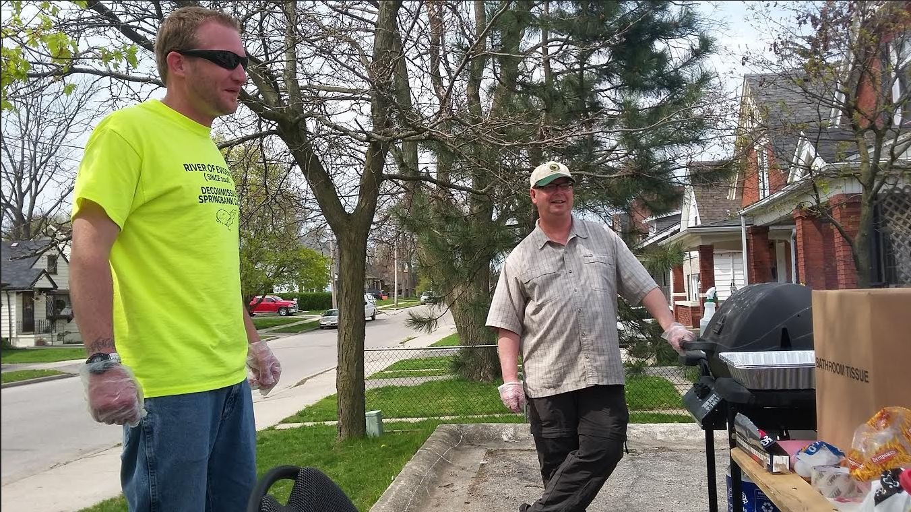

Current Events
TRAA Paddle & Fish
Saturday, July 13, 2019
We've picked the date for this year's Paddle & Fish but have yet to decide on the route. So far, the route with the most suport is the South Thames River east of London. There will be an email confirming details soon but make sure you block july 13th off on your calendar!
If you have a route suggestion, please Contact us.
TRAA Fishing Evenings
Thurdays, July & August, 2019
We'll be heading out to try our luck every Thurday evening in July and August this summer.
Keep an eye on your email for locations and dates as we organize them.
Send your suggestions for venues!
Past Events
River Cleanup!
May 16-17, 2019
The TRAA be helped out again this year With a cleanup of the shoreline and area of the river near the Komoka Road bridge. After meeting at the NEW parking lot for Komoka Provincial Park on Gideon Drive, everyone carpooled to the usual stretch around the bridge. Thank you to all that showed up to help out!
Medway Creek Habitat Project
Wednesday, May 17, 2017
Those of you who have been involved with the brown trout releases over the past few years may recognize this spot on Medway Creek as the release point. Those of you who have been attending the last few General Meetings will also know that this is part of a 280-metre stretch on which we will be focusing future habitat rehabilitation efforts. We have met with and have the support of the two landowners through which this stretch of Medway Creek flows. Back in March we put together a short video of our stream walk on this section of Medway Creek, during which we documented areas in need of work and added our initial thoughts. If you would like to be involved with TRAA projects like this one or one of the many others that we have ongoing, please Contact Us.
Stream Habitat Work Party
October 13, 2018
A few TRAA memnbers cleared a number of fallen trees and other blockages on October 13th. Dan Shinkelshoek made a video of the proceedings and it's worth a look so click on the picture to view. If you have further questions about TRAA stream habitat projects and events, please come out to the TRAA General Meeting on Wednesday, November 14th or contact us.
Rainbow Trout Release
Friday, June 16, 2017
The rainbow trout fingerlings that we raised from eggs over this past winter were released into Dingman Creek. This year the TRAA welcomed the ECO Club from Louise Arbour French Immersion Public School, to come out and assist successfully releasing in excess of 40,000 rainbow trout. Both the weather and the water conditions were nearly perfect, adding to a fun and rewarding learning experience for these enthusiastic students. The trout hatchery is now idle and will undergo some upgrades over the summer in addition to the regular yearly maintenance. If you'd like to get in on this and other TRAA activities just contact us.
Brook Trout Release
Wednesday, May 17, 2017
The brook trout fingerlings went on the annual road trip throughout rural areas northeast of London to be released into several different cold water tributaries. These were brook trout eggs that we harvested with folks from the Upper Thames Conservation Authority (UTRCA) to be raised in the TRAA trout hatchery. Thanks to everyone that has put in their time and effort to collect the brook trout eggs, monitor them in the hatchery and participate in the release. TRAA members Rob and Owen Huber, Stan Gibbs, and Bill Vandewetering did most of the transfer and transportation duties with the support of the Upper Thames Conservation Authority, Ministry of Natural Resources. Special thanks to all of the landowners for being involved with the habitat improvements of these little coldwater streams into which these trout were released.
Brown Trout Release
Monday, May 2, 2016
The brown trout were successfully released with the help of 30 Grade 7/8 students from Oxbow Public School. It was good timing as the rain stopped just as we showed up at the hatchery. Half of the students went for a stream tour lead by Bill Vandewetering and Richard Westelaken while the other half toured the hatchery operation. During the stream tour the bald eagle showed up to its nest with a fish in its talons, much to the amazement of our guests. A "bucket brigade" was set up with the help of Pud Hunter, Ryan Simard, Ray Baxter, Fred Smithers and Stephen Jones to get the fish loaded into the transfer tank for the trip. The release site on Oxbow Creek was absolutely stunning. The water was a bit murky but was shallow enough to be safe for the release. There was only a one degree difference between the stream temperature at the water in the hatchery so very little acclimating was required.
Thames River Cleanup
Saturday, May 7, 2016

TRAA members met with another group to do our yearly cleanup of the area around Komoka bridge (some may call it the Speedway bridge). While a good amount of trash was removed from the area, participants commented that there seemed to be significantly less to pick up than in previous years. Let's hope that trend continues! It's always a great way to get some fresh air, light exercise and top up your commitment to "give back". Thanks go out to Jeremy Beaton for organizing the TRAA contingent.
Angling Sports Barbeque
Saturday, May 7, 2016
There was hotdogs, burgers and lots of fun going on at this informal get-together. Paul Noble put his barbequing skills to the test supplying a steady stream of hungry customers. Ryan Simard spent most of his time trying to sell tickets for the "Count the Bobbers Contest". Ryan was also the main guy in organizing and pulling this whole event together - nice work Ryan! Your ticket gave you a chance at a $100 dift certificate courtesy of Angling Sports! As an additional bonue, you also got the equivalent of the tax taken off any purchase in the Angling Sports store! All the proceeds went to benefit the TRAA and our projects. Once again, many thanks go out to Pat DeVincenzo and the folks at Angling Sports.